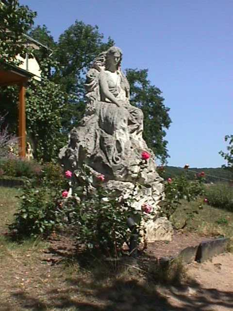
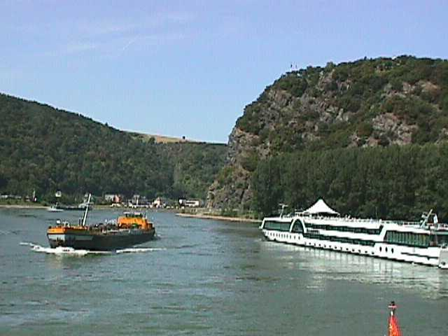

A statue of Lorelei Atop the Lorelei Rock
高い岩の上で魔女ローレライが歌う歌声に船乗りが魂を魅了されて岩にぶつかるという伝説がある ローレライの岩の所でライン川の川幅が狭くなり急流となるため難所として知られている

August 1973 The Lorelei Rock on the Rhine River
コブレンツからライン川を古城を見ながら遡る途中の名勝